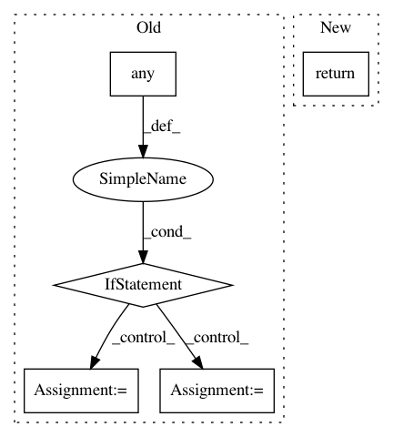

7cb327a5de4ad5669fdc998ee96ac2bdcff3e7be,brian2/core/functions.py,,timestep,#,546
Before Change
else:
are_inf = np.isinf(elapsed_steps)
int_steps = np.asarray(elapsed_steps, dtype=int)
if any(are_inf):
int_steps[are_inf & (elapsed_steps < 0)] = _iinfo.min
int_steps[are_inf & (elapsed_steps > 0)] = _iinfo.max
return int_steps
DEFAULT_FUNCTIONS = {
After Change
if elapsed_steps > 0:
return _infinity_int
else:
return -_infinity_int
else:
return np.int_(elapsed_steps)
else:
int_steps = np.asarray(elapsed_steps, dtype=int)
In pattern: SUPERPATTERN
Frequency: 4
Non-data size: 5
Instances
Project Name: brian-team/brian2
Commit Name: 7cb327a5de4ad5669fdc998ee96ac2bdcff3e7be
Time: 2018-05-29
Author: marcel.stimberg@inserm.fr
File Name: brian2/core/functions.py
Class Name:
Method Name: timestep
Project Name: gpleiss/efficient_densenet_pytorch
Commit Name: b96c824d5fc325b6f3ad4d10031a7ec28f9e941f
Time: 2018-03-05
Author: gpleiss@gmail.com
File Name: models/densenet_efficient.py
Class Name: _EfficientDensenetBottleneckFn
Method Name: forward
Project Name: scikit-learn/scikit-learn
Commit Name: cd840732e126d34b482f50140828cf93427ac8b5
Time: 2020-07-08
Author: cary.goltermann@gmail.com
File Name: sklearn/pipeline.py
Class Name: FeatureUnion
Method Name: transform
Project Name: scikit-learn/scikit-learn
Commit Name: cd840732e126d34b482f50140828cf93427ac8b5
Time: 2020-07-08
Author: cary.goltermann@gmail.com
File Name: sklearn/pipeline.py
Class Name: FeatureUnion
Method Name: fit_transform